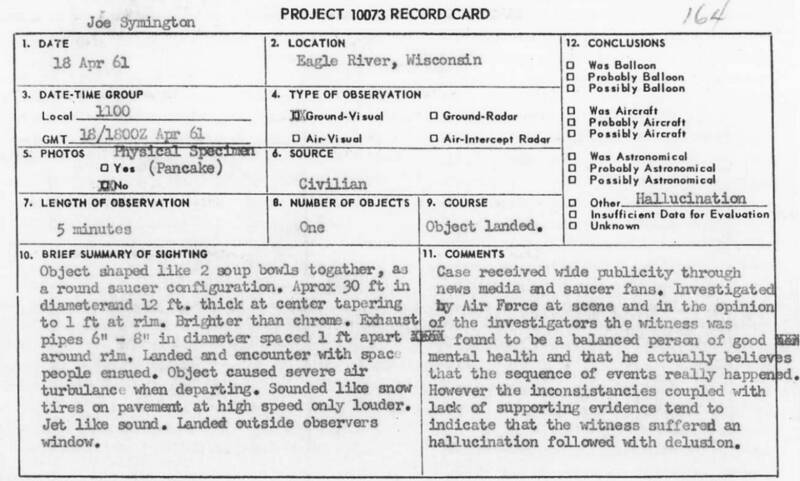

Eagle River pancakes
Wisconsin, 1961

Plumber Joe Simonton said that on April 18, 1961, a silver saucer landed by his house and three small men handed him pancake-like cakes in exchange for a jug of water. The Air Force had one tested, and the Food and Drug Administration found it was an ordinary pancake of terrestrial origin. J. Allen Hynek, investigating for the Air Force, concluded Simonton had hallucinated, though in 1978 he said he would give it more credence. 1,2
Open in the interactive Watcher
Sources
- Joe Simonton Wikipedia
- Eagle River, Wisconsin, 1961: Hynek's case file Center for UFO Studies, 1961